import pandas as pd
import seaborn as snsLoad the CSV file, beer_markets_cleaned.csv, from the
class website:
beer_markets = pd.read_csv('https://bcdanl.github.io/data/beer_markets_cleaned.csv')beer_markets
beer_markets does not have any missing
values.hh: an identifier of the household;purchase_desc: details on the purchased item;quantity: the number of items purchased;brand: Bud Light, Busch Light, Coors Light, Miller
Lite, or Natural Light;spent: total dollar value of purchase;beer_floz: total volume of beer, in fluid ounces;price_per_floz: price per fl.oz. (i.e., beer spent/beer
floz);container: the type of container;promo: Whether the item was promoted (coupon or
otherwise);market: Scan-track market (or state if rural);beer_markets by hh in
ascending order.Answer
beer_markets = beer_markets.sort_values('hh')Count the number of households for each market.
Answer
# The below line counts the number of non-missing values
# for each variable for each group of "market" and "hh".
q1b = beer_markets.groupby(["market", "hh"]).count()
# In the resulting DataFrame q1b above,
# there is only one single observation for each group of
# "market" and "hh".
# So, the following line counts the number of households
# for each market.
q1b = q1b.groupby(["market"]).count()
q1b = q1b.loc[ :, ["brand"] ]
q1b.columns = ['n'] # rename `brand` with `n`
# For renaming, the following also works:
# q1b = q1b.rename({'brand':"n"}, axis = 'columns')Find the top 5 beer markets in terms of the number of households that purchased beer.
Answer
q1c = q1b.sort_values('n', ascending = False)| market | n |
|---|---|
| TAMPA | 280 |
| DETROIT | 214 |
| COLUMBUS | 184 |
| MIAMI | 178 |
| PHOENIX | 168 |
Sum of beer_floz for each market.
Answer
q1d = beer_markets.groupby(["market"]).sum()
q1d = q1d.loc[ :, ["beer_floz"] ]
# the following gives the Series, instead of the DataFrame
# q1d = q1d['beer_floz'] Find the top 5 beer markets in terms of the amount of total beer
consumption.
Answer
q1e = q1d.sort_values('beer_floz', ascending = False)| market | beer_floz |
|---|---|
| TAMPA | 462904 |
| PHOENIX | 388824 |
| DETROIT | 309588 |
| MIAMI | 271870 |
| COLUMBUS | 266896 |
price_per_floz is continuous.brand is categorical.Describe the distribution of price_per_floz for each
brand using seaborn.
Make a simple comment on comparison for the distribution of
price_per_floz across brands.
Answer
# distribution of price_per_floz for BUD LIGHT
sns.displot( x = 'price_per_floz', bins = 200,
data = beer_markets[ beer_markets['brand'] == 'BUD LIGHT' ] )
# distribution of price_per_floz for COORS LIGHT
sns.displot( x = 'price_per_floz', bins = 200,
data = beer_markets[ beer_markets['brand'] == 'COORS LIGHT' ] )
# distribution of price_per_floz for MILLER LITE
sns.displot( x = 'price_per_floz', bins = 200,
data = beer_markets[ beer_markets['brand'] == 'MILLER LITE' ] )
# distribution of price_per_floz for BUSCH LIGHT
sns.displot( x = 'price_per_floz', bins = 200,
data = beer_markets[ beer_markets['brand'] == 'BUSCH LIGHT' ] )
# distribution of price_per_floz for NATURAL LIGHT
sns.displot( x = 'price_per_floz', bins = 200,
data = beer_markets[ beer_markets['brand'] == 'NATURAL LIGHT' ] )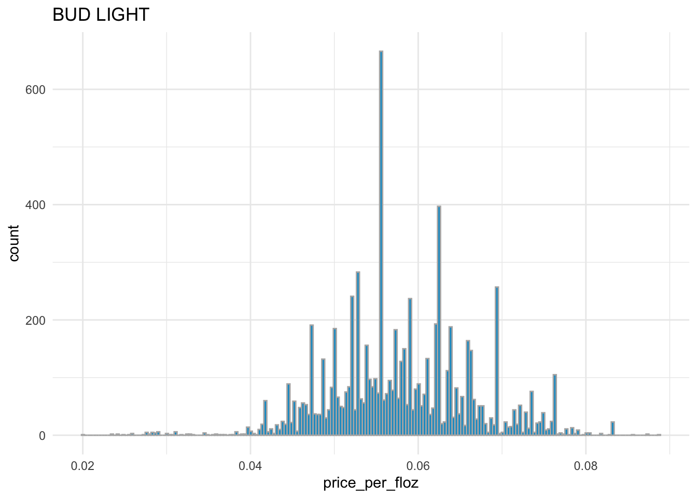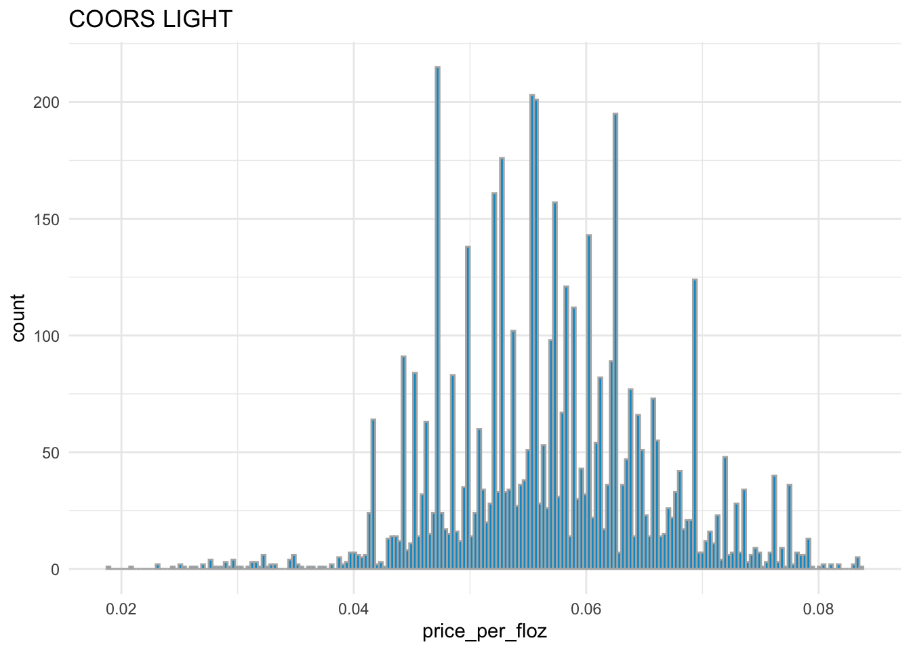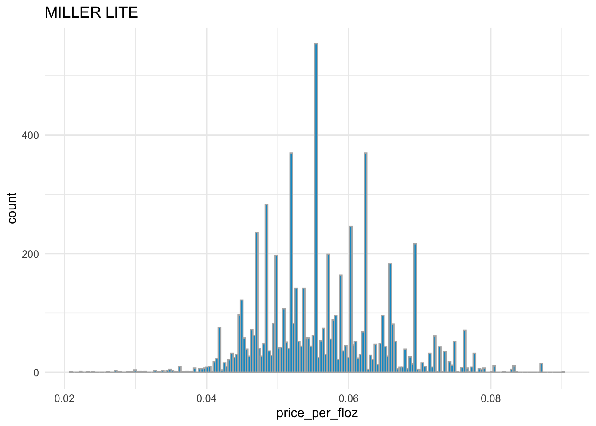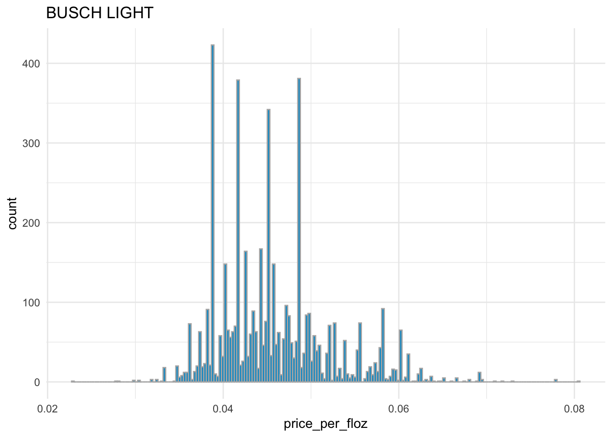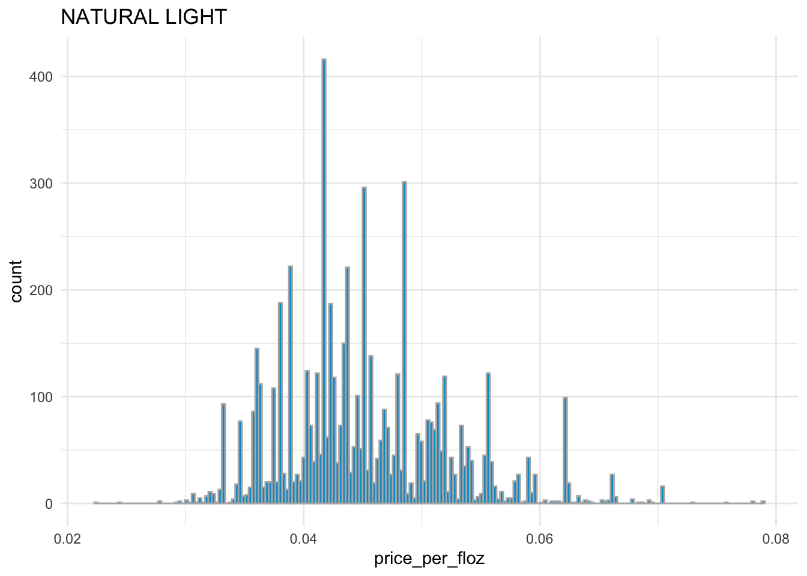
BUD LIGHT, COORS LIGHT, and
MILLER LITE have the similar distribution of
price_per_floz with each other.
BUSCH LIGHT and NATURAL LIGHT have the
similar distribution of price_per_floz with each
other.
Overall, BUD LIGHT, COORS LIGHT, and
MILLER LITE are more expensive than
BUSCH LIGHT and NATURAL LIGHT.
Both variables price_per_floz and
beer_floz are continuous.
Describe the relationship between price_per_floz and
beer_floz by brand using seaborn.
Make a simple comment on the visualization result regarding how
the relationship between price_per_floz and
beer_floz varies by brand.
sns.lmplot(x = "beer_floz",
y = "price_per_floz",
scatter_kws = {'alpha' : 0.2},
data = beer_markets[ beer_markets['brand'] == 'BUD LIGHT' ] )
sns.lmplot(x = "beer_floz",
y = "price_per_floz",
scatter_kws = {'alpha' : 0.2},
data = beer_markets[ beer_markets['brand'] == 'COORS LIGHT' ] )
sns.lmplot(x = "beer_floz",
y = "price_per_floz",
scatter_kws = {'alpha' : 0.2},
data = beer_markets[ beer_markets['brand'] == 'MILLER LITE' ] )
sns.lmplot(x = "beer_floz",
y = "price_per_floz",
scatter_kws = {'alpha' : 0.2},
data = beer_markets[ beer_markets['brand'] == 'BUSCH LIGHT' ] )
sns.lmplot(x = "beer_floz",
y = "price_per_floz",
scatter_kws = {'alpha' : 0.2},
data = beer_markets[ beer_markets['brand'] == 'NATURAL LIGHT' ] )
# all the plots in one plot:
sns.lmplot(x = "beer_floz",
y = "price_per_floz",
hue = "brand",
scatter_kws = {'alpha' : 0.2},
data = beer_markets)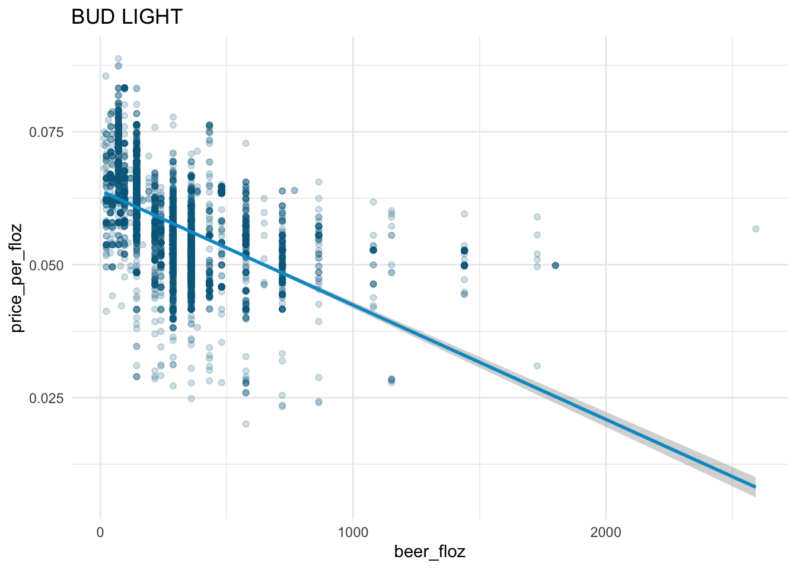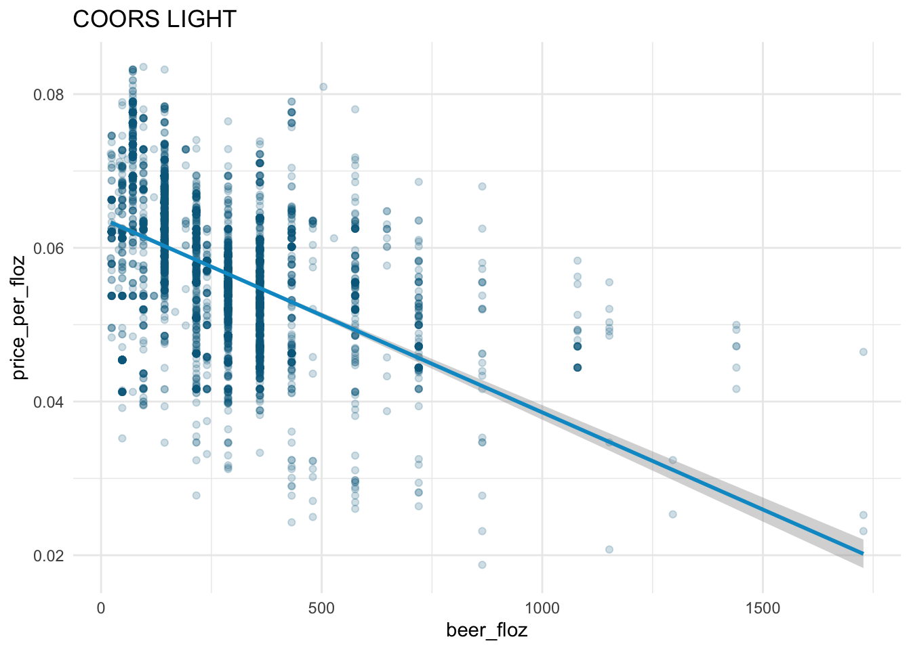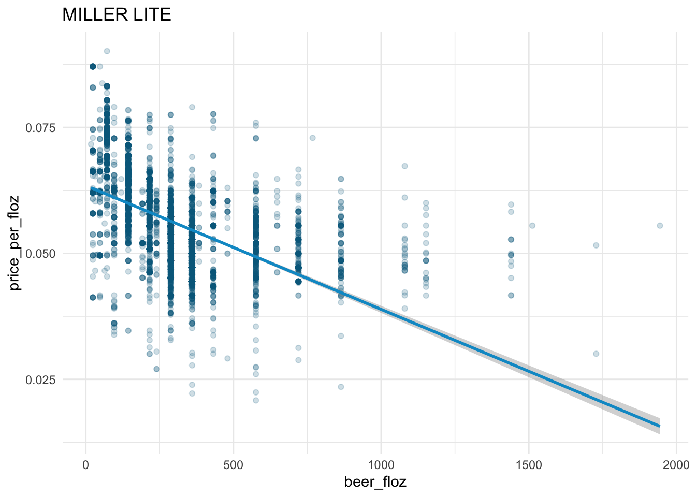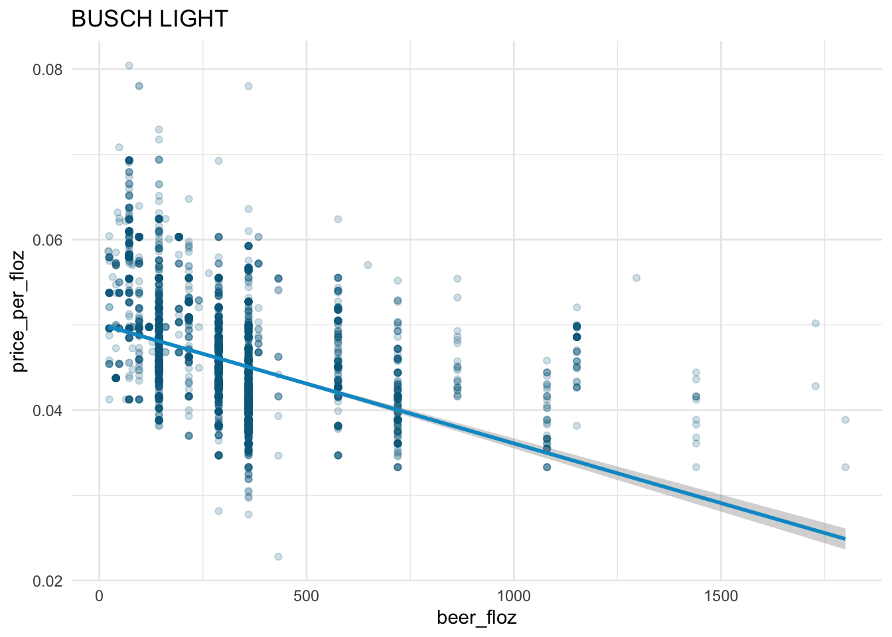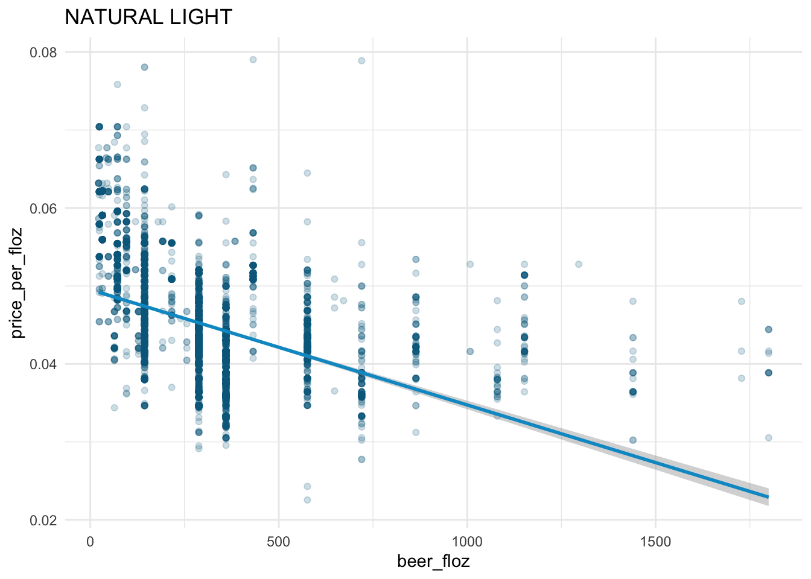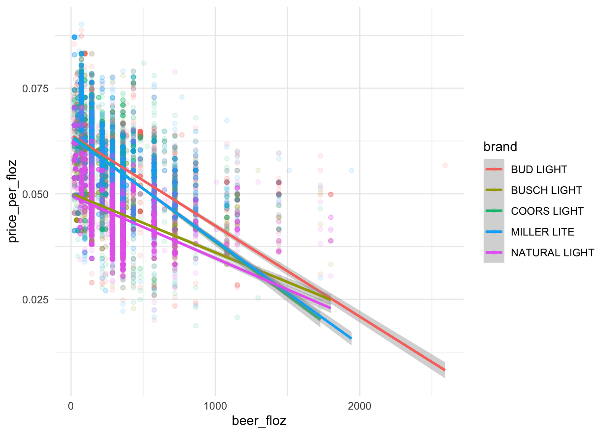
The law of demand holds in the beer market:
The demand curves for BUD LIGHT,
COORS LIGHT, and MILLER LITE are steeper than
those for BUSCH LIGHT and
NATURAL LIGHT.
According to the demand curves, BUD LIGHT,
COORS LIGHT, and MILLER LITE have larger
demands than BUSCH LIGHT and NATURAL LIGHT
given the same level of price_per_floz \(\geq\) 0.0375.